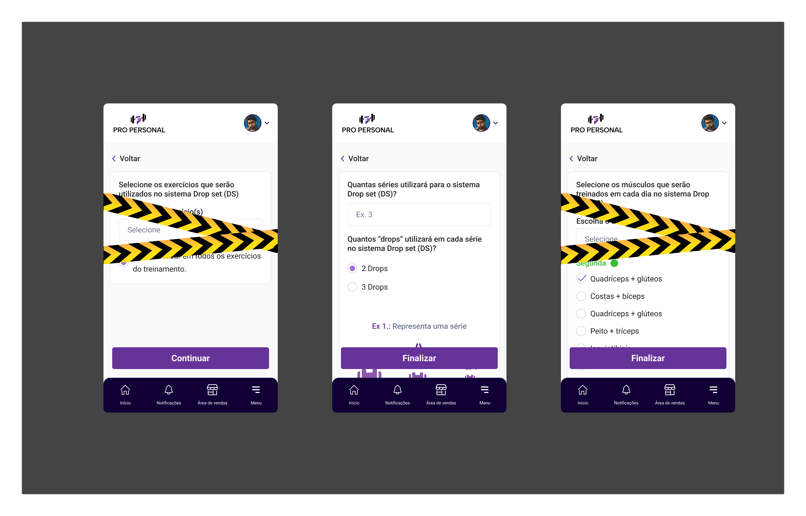
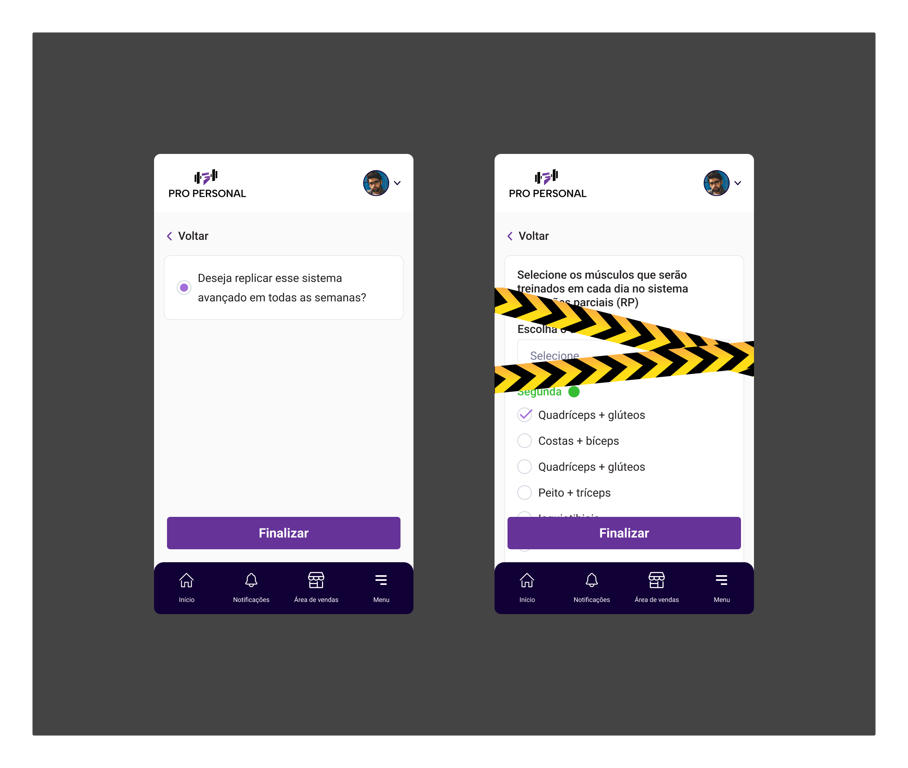
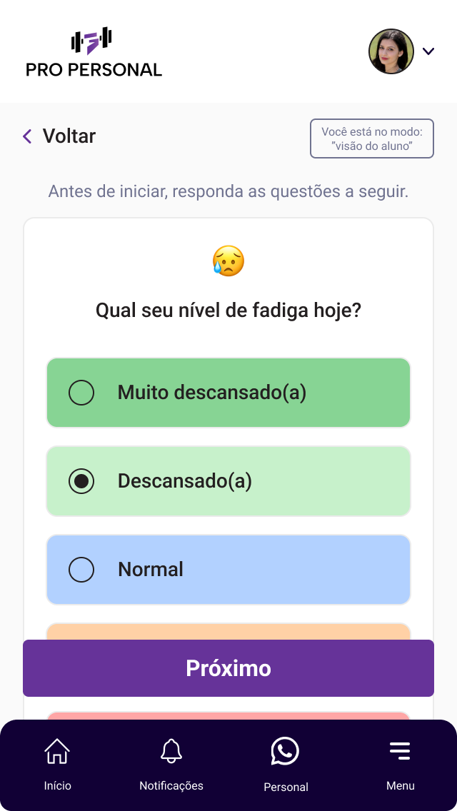

Sports Science Engine
Pro Personal · Periodização Clínica & Fadiga Adaptativa
11 Metodologias de Força
PAR-Q Triagem Médica
DiaCansado / AVISO (11 Telas)
GVT (German Volume 10×10)
Drop Set (DS)
Rest-Pause (RP)
RIR / Reps in Reserve
Cluster Sets






Fisiologia do Exercício
Modelagem Digital de Periodização Avançada
Tradução visual direta de 11 metodologias avançadas de treinamento resistido para cálculo automático de séries, repetições e intervalos de recuperação neuromuscular.
PAR-Q Triagem Médica
Avaliação do treinador com CRUD administrativo
Interceptação Ativa
11 telas de alerta adaptativo DiaCansado
Autoria Metodológica
Pesquisador EEFE-USP (500+ páginas)